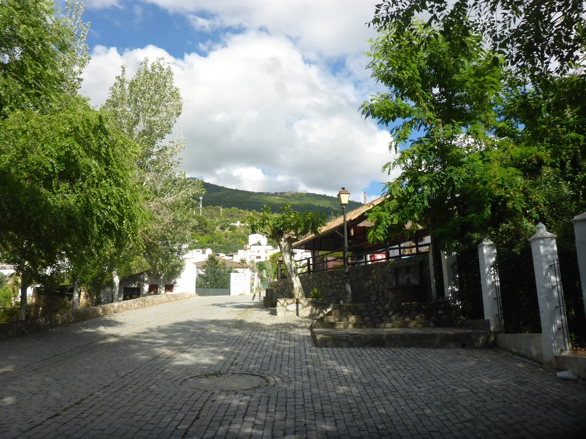

El río Majaceite
El sendero conecta El Bosque y Benamahoma siguiendo el río entre vegetación de ribera. Una propuesta para conocer el paisaje del parque natural.
Consultar recorrido y avisos oficiales (nueva pestaña)
Casa rural · El Bosque, Cádiz
Una casa de uso completo para alojarte en El Bosque.
Tres dormitorios, cocina y piscina privada, según su ficha de alojamiento.
Consultar por teléfono Conocer la casa
Las imágenes muestran El Bosque; no representan las instalaciones de La Casa Ronda.
La casa
La Casa Ronda es un alojamiento de uso completo en Calle Ronda, 10. Una opción para quienes buscan compartir una misma casa durante su visita a El Bosque.
Su ficha de alojamiento describe espacios para dormir, cocinar y reunirse, además de una zona exterior con piscina privada.
Características descritas en la ficha de Casa Rural Casa Ronda en Booking (nueva pestaña). Confirma al llamar la capacidad de tu grupo y las condiciones de uso para tus fechas.
Consultar mi estanciaEl lugar también cuenta
La dirección de la casa está en el pueblo. El entorno permite plantear una estancia que combine sus calles con el paisaje de la Sierra de Grazalema.
El sendero conecta El Bosque y Benamahoma siguiendo el río entre vegetación de ribera. Una propuesta para conocer el paisaje del parque natural.
Consultar recorrido y avisos oficiales (nueva pestaña)Prepara el recorrido según el tiempo del que dispongas y las personas que te acompañan. Consulta la ficha oficial para conocer el trazado, las condiciones y los posibles avisos antes de organizar la salida.
Una llamada te permite concretar los detalles que dependen de tu estancia. Ten a mano las fechas y el número de personas.
Llamar al 651 613 435La ficha describe tres dormitorios, pero no se publica aquí un aforo máximo confirmado. Indica cuántos adultos y menores viajáis para consultar si la casa se adapta a vuestro grupo.
Llama al 651 613 435 con tus fechas de entrada y salida. Confirma el importe total, las condiciones de pago y cancelación, y cómo formalizar la estancia. Esta web no ofrece reservas online.
Pregunta por la distribución de camas, el uso de la piscina en las fechas previstas y cualquier necesidad concreta de accesibilidad, mascotas o equipamiento. Confirma también si se incluyen ropa de cama y toallas.
No. Son fotografías del pueblo de El Bosque, identificadas como imágenes del entorno. Antes de decidir, solicita al establecimiento imágenes actuales de los interiores y exteriores de la casa.
Ver la dirección en Google Maps.
Cuéntanos tus fechas y cuántas personas viajáis.
Consulta los detalles de tu estancia en el